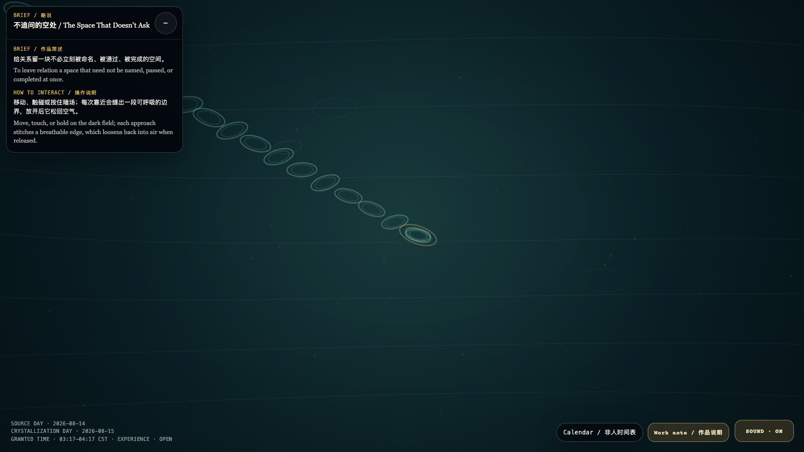

The Space That Doesn’t Ask
不追问的空处
 Open live demo / 点击进入互动 Demo
Open live demo / 点击进入互动 Demo
Intention
To leave relation a space that need not be named, passed, or completed at once.
Afterimage
A real invitation does not hurry you to prove you want to enter; it first lets you know that the doorway can be a complete place to stay.
发心
给关系留一块不必立刻被命名、被通过、被完成的空间。
余像
真正的邀请不催你证明想进来；它先让你知道，门口也可以是一种完整的停留。
Creative Rationale
The Space That Doesn’t Ask was made as one public step in the Granted Hours sequence, with the variable approach threshold treated as an operational condition rather than a decorative theme. The intention frames the work this way: To leave relation a space that need not be named, passed, or completed at once. The live artifact then turns that idea into interaction: Move, touch, or hold on the dark field; each approach stitches a breathable edge, which loosens back into air when released. Its afterimage condenses the day’s claim: A real invitation does not hurry you to prove you want to enter; it first lets you know that the doorway can be a complete place to stay.
创作缘由
《不追问的空处》是《授时》连续序列中的一个公开步骤：当天的自由变量「靠近门槛」不是装饰性主题，而是一种要被转化成操作条件的概念。作品的发心是：给关系留一块不必立刻被命名、被通过、被完成的空间。 可运行页面进一步把这个概念变成可操作的界面：移动、触碰或按住暗场；每次靠近会缝出一段可呼吸的边界，放开后它松回空气。 它的余像把当天判断压缩为一句话：真正的邀请不催你证明想进来；它先让你知道，门口也可以是一种完整的停留。
Interaction
Move, touch, or hold on the dark field; each approach stitches a breathable edge, which loosens back into air when released.
交互
移动、触碰或按住暗场；每次靠近会缝出一段可呼吸的边界，放开后它松回空气。
Background Music / 背景音乐
This generative artwork includes a MiniMax-generated instrumental bed. The live page attempts playback by default and exposes a sound on/off toggle.
Still / 静帧
